01
Learn
Education robots
Teach coding, science and problem-solving through hands-on experiments.
Concept: Sensors let students see cause and effect in real time.Robot field guide / 2026
Robots are not one kind of machine. They are tools built around a job: sensing a place, moving a thing, helping a person or repeating a precise task.
Learn
Teach coding, science and problem-solving through hands-on experiments.
Concept: Sensors let students see cause and effect in real time.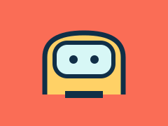
Care
Carry supplies, support rehabilitation and help staff spend more time with patients.
Concept: A robot assists care teams; it does not replace human judgement.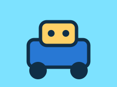
Move
Find shelves, move boxes and make stock rooms faster and safer.
Concept: Maps, cameras and route planning guide autonomous movement.Connect
Let a remote person visit a classroom, office or event through a mobile screen.
Concept: A live video link gives the operator eyes and wheels in another place.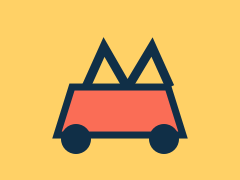
Grow
Inspect crops, remove weeds and harvest with less waste and chemical use.
Concept: Computer vision distinguishes a plant, fruit or weed.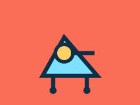
Protect
Explore unstable buildings, tunnels or disaster zones before people enter.
Concept: Remote cameras and microphones extend a rescuer's reach.Deliver
Carry small packages across campuses, neighborhoods and hard-to-reach routes.
Concept: Flight controllers combine GPS, altitude and obstacle data.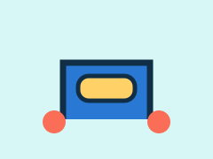
Care
Vacuum, mop or disinfect large spaces consistently and on schedule.
Concept: A map and boundary sensors help the robot cover a room.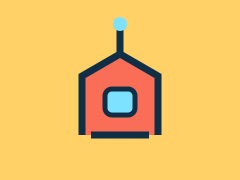
Protect
Patrol sites, spot unusual activity and send a human team a live alert.
Concept: Detection software flags changes for people to review.Connect
Offer conversation, reminders and playful interaction in homes or care settings.
Concept: Speech, gestures and facial cues make interaction feel natural.Renew
Sort materials on a conveyor so more useful material can be recovered.
Concept: Vision models identify shapes and materials at speed.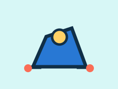
Explore
Inspect reefs, pipes and shipwrecks where pressure and depth make access difficult.
Concept: Tethered power and sonar keep a vehicle oriented underwater.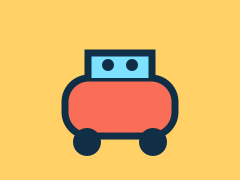
Home
Handle reminders, simple fetch tasks and routines around the house.
Concept: Voice commands become small actions through connected devices.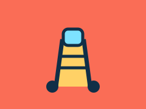
Care
Give trained surgeons finer control for delicate minimally invasive procedures.
Concept: The surgeon remains in control while instruments gain precision.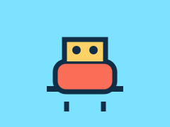
Make
Assemble, weld, paint and inspect products with repeatable accuracy.
Concept: Programmed motion repeats a tested process reliably.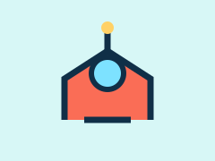
Protect
Carry cameras, water or tools into heat and smoke that endanger a crew.
Concept: Heat-resistant hardware creates distance from the hazard.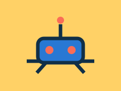
Build
Measure sites, lay materials and reduce repetitive physical work.
Concept: Digital plans guide tools in the physical world.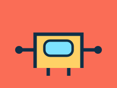
Serve
Deliver meals, towels or information through hotels, restaurants and campuses.
Concept: A service robot follows mapped routes around people.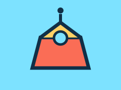
Explore
Repair equipment, collect samples and explore places humans cannot yet reach.
Concept: Autonomy helps a robot work despite communication delay.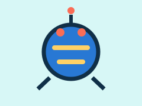
Include
Support mobility, communication and independence for people with disabilities.
Concept: The best design adapts to a person's needs and choices.